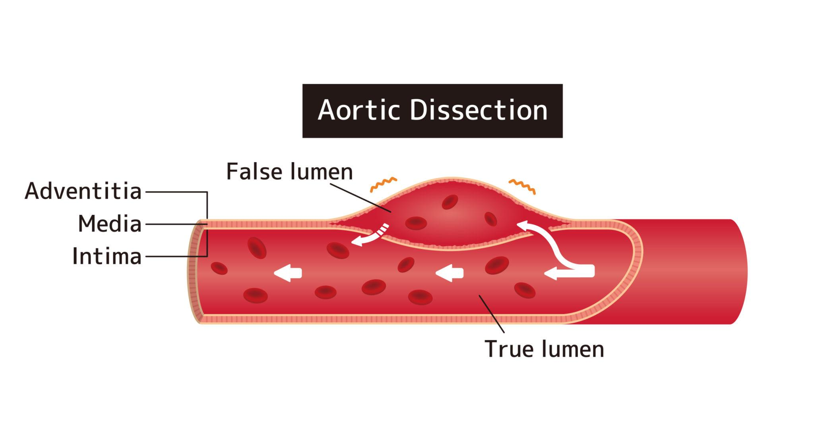
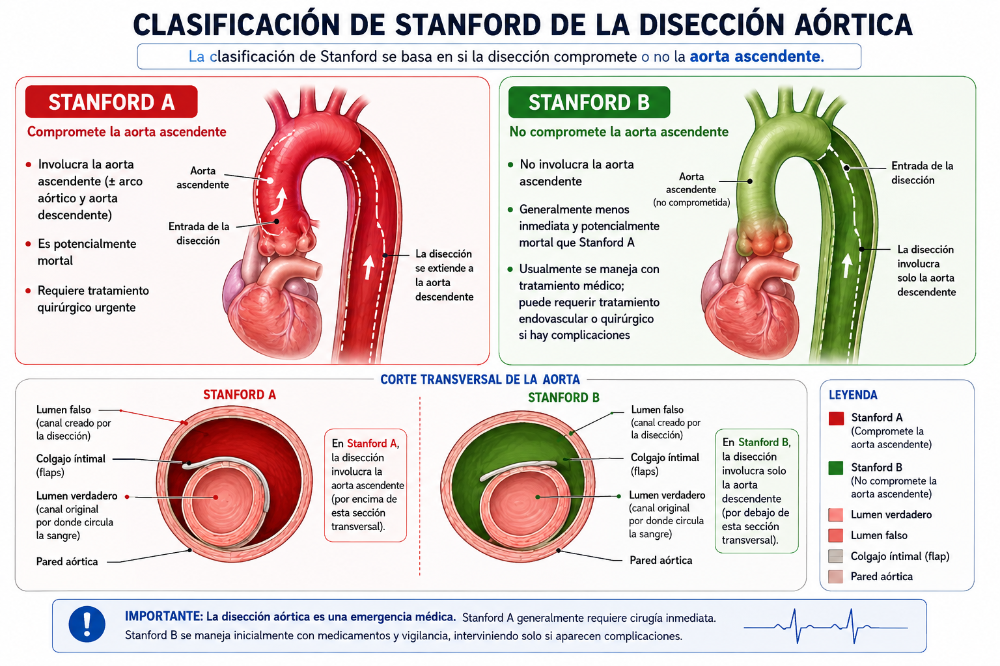
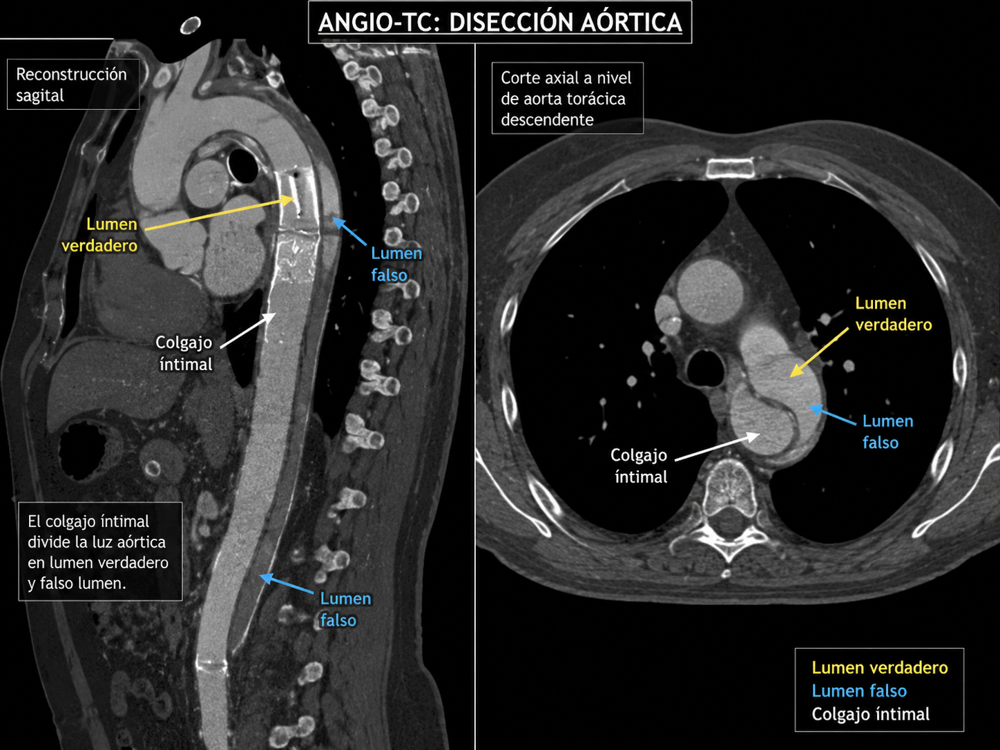

💥 Dolor desgarrador
Dolor torácico o dorsal de inicio súbito, extremadamente intenso, descrito como "desgarrador" o "lacerante", que puede migrar hacia la espalda o el abdomen.
Separación de las capas de la aorta por entrada de sangre a través de un desgarro.

Un desgarro en la íntima permite que la sangre avance entre las capas de la pared aórtica. Puede bloquear ramas arteriales, causar insuficiencia de la válvula aórtica o romper la aorta.

| Tipo | Características | Conducta habitual |
|---|---|---|
| Stanford A | Afecta la aorta ascendente, con o sin extensión hacia la descendente. | 🚨 Cirugía urgente debido al alto riesgo de rotura, taponamiento cardíaco e insuficiencia valvular. |
| Stanford B | Compromete únicamente la aorta descendente. | 💊 Generalmente manejo médico intensivo; algunos pacientes requieren reparación endovascular. |

La angio-TC es el estudio más utilizado para confirmar una disección aórtica. Permite observar el colgajo de la íntima que divide la aorta en un lumen verdadero y un falso lumen, además de determinar la extensión de la disección.
El síntoma clásico es un dolor torácico o dorsal de inicio súbito, muy intenso y descrito por muchos pacientes como un dolor "desgarrador" o "como si algo se rompiera".
También pueden aparecer sudoración, desmayo, dificultad para respirar o déficit neurológico si la disección compromete otras arterias.
Dolor torácico o dorsal de inicio súbito, extremadamente intenso, descrito como "desgarrador" o "lacerante", que puede migrar hacia la espalda o el abdomen.
Pulso o presión arterial diferentes entre ambos brazos. Sugiere compromiso de las ramas de la aorta.
Puede presentarse pérdida de fuerza, alteración del habla, desmayo o accidente cerebrovascular por disminución del flujo cerebral.
Es un signo de extrema gravedad. Puede indicar rotura de la aorta o taponamiento cardíaco y requiere cirugía urgente.
La disección aórtica debe sospecharse ante un dolor torácico intenso y súbito, especialmente si existe diferencia de pulsos, hipotensión o síntomas neurológicos. El diagnóstico y tratamiento precoces pueden salvar la vida del paciente.
Hipertensión, enfermedades del tejido conectivo, válvula aórtica bicúspide, aneurisma previo, traumatismo y ciertos procedimientos.
Es una emergencia. Se confirma habitualmente con angio-TC, ecocardiografía especializada o resonancia. El tratamiento depende de la parte de la aorta afectada e incluye control intensivo de presión y cirugía urgente en muchos casos.
Dolor súbito intenso en pecho o espalda, especialmente con desmayo o debilidad neurológica, requiere servicios de emergencia.